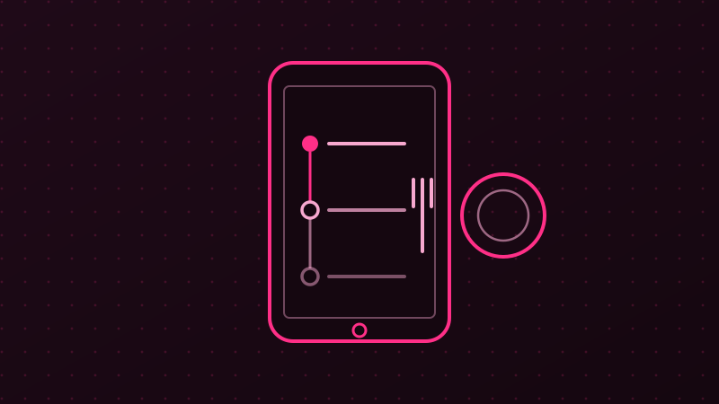

My Projects
A few of the things I've designed, built, and shipped with a team.

Community Clinic Appointment & Queue Management System
Led a student team through an Agile, CI/CD, test-driven build of a public web app for South African community clinics, covering appointment booking, live queue status, and clinic search seeded from a real national health facility dataset.

Restaurant Order Tracking App
An Android app giving customers real-time visibility into how far along their food order is, connected to a PHP backend and MySQL database to drive live status updates.

ErgoVision — Posture & Musculoskeletal Health Scanner
A React web app that gives instant, personalized posture feedback from a photo or live camera feed. It analyses spine, neck, and shoulder alignment, highlights what's working and what needs attention, and offers simple, practical steps to improve alignment, helping prevent chronic neck and back pain before it starts.

StewardTech
Co-designed a digital platform concept under Enactus at the Wits E-Hub, connecting youth to micro-opportunities and skill-building experiences using design-thinking methods.